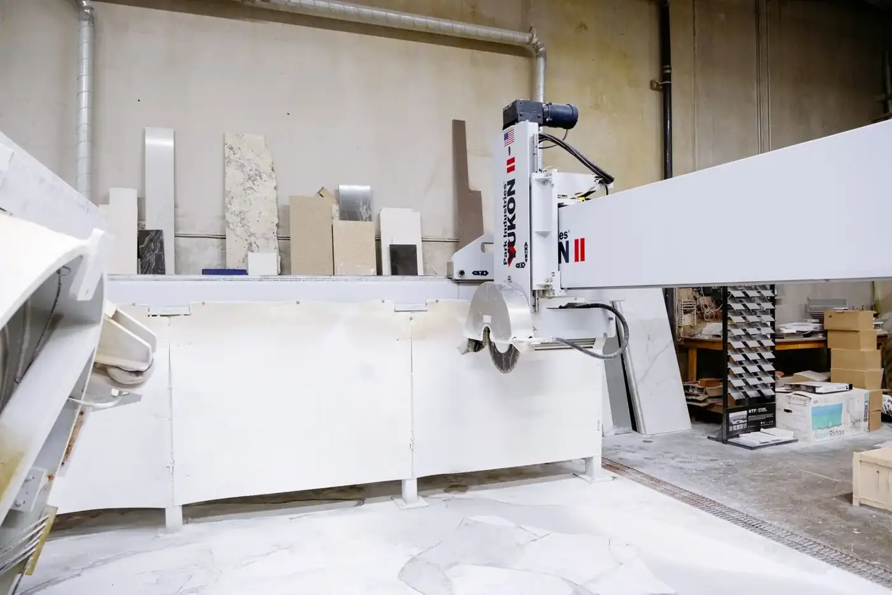
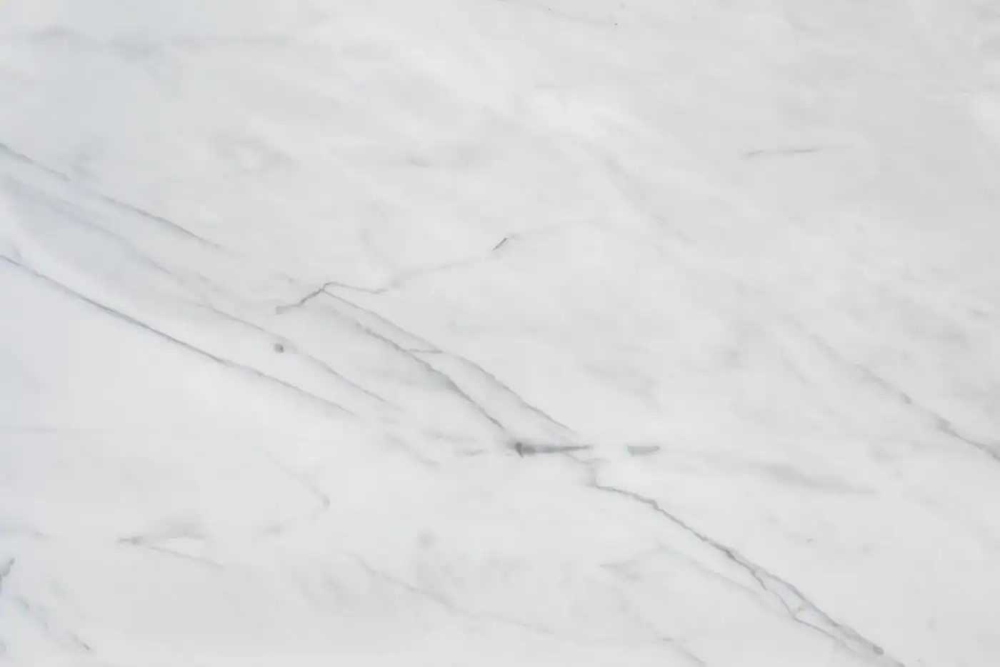
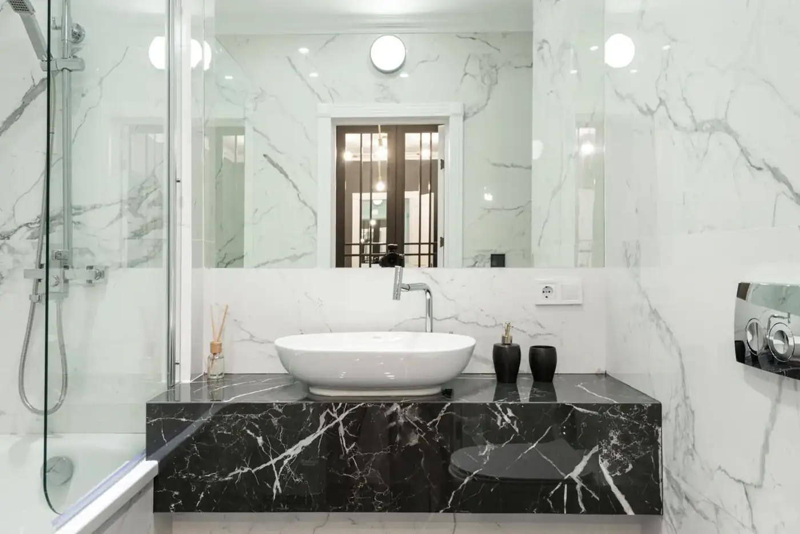

Custom countertops
Fabrication and installation in quartz, granite, marble and quartzite.
Dallas Countertops & Floors · Balch Springs, TX
Custom countertops, Porcelain surfaces, Kitchen cabinets — Balch Springs, TX — Dallas area.
What we do
Fabrication and installation in quartz, granite, marble and quartzite.
Large-format porcelain countertops.
Cabinets to complete your kitchen.
Kitchen transformations from concept to completion.
About
Dallas Countertops & Floors provides custom countertop fabrication and installation and home remodeling, with over 30 years of craftsmanship. They work in quartz, granite, porcelain, marble and quartzite, from concept to completion.
Gallery
Sample imagery from Pexels standing in for Dallas Countertops & Floors projects — to be replaced with real project photos.






Reviews
Service area
Enquire
Tell us about your project and we’ll get back to you.
What this preview improves